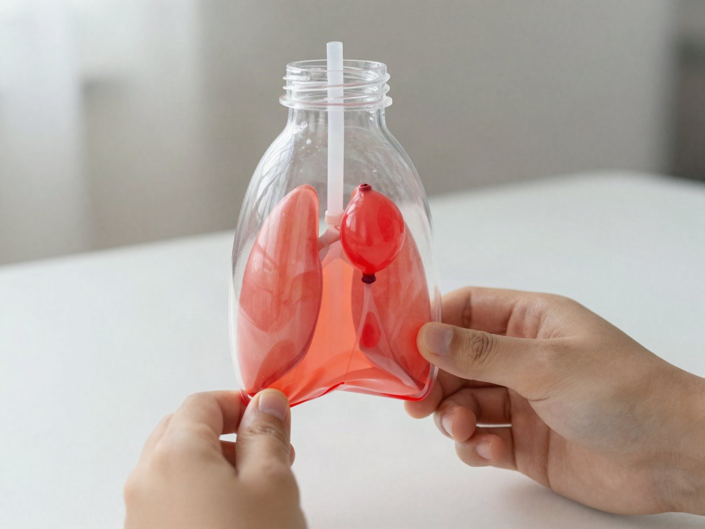

전체 단원 › 실험·활동 › 5~6학년 과학
페트병 폐 모형

페트병 속 풍선이 숨을 쉬어요. 우리가 어떻게 공기를 들이마시는지 눈으로 확인해요.
30분 · 난이도 ★★☆ 보통
준비물
- 작은 페트병 1개 — 300~500mL 투명 생수병
- 풍선 2개 — 작은 것 1개, 보통 것 1개
- 빨대 1개 — 굵은 빨대가 좋아요
- 찰흙이나 클레이 — 병 입구 빈틈을 막는 용도
- 고무줄 2개, 테이프, 가위 — 고정하고 자르기용
만드는 방법
- 병 바닥 잘라 내기
페트병 바닥에서 3cm 위를 잘라 내요. 잘린 면이 날카로우면 테이프를 한 바퀴 둘러요. - 빨대에 풍선 달기 (허파)
작은 풍선 입구에 빨대를 넣고 고무줄로 단단히 감아 공기가 새지 않게 해요. 이 풍선이 '허파'예요. - 병 입구 막기
풍선이 병 안쪽으로 들어가도록 빨대를 병 입구에 꽂고, 빈틈을 찰흙으로 꼼꼼히 막아요. 틈이 있으면 실험이 잘 안 돼요. - 가로막 만들기
보통 풍선의 입구를 묶고 둥근 아랫부분을 잘라 내요. 남은 부분을 병의 잘린 바닥에 팽팽하게 씌우고 고무줄로 고정해요. 이것이 '가로막'이에요. - 숨쉬기
아래 풍선의 매듭을 잡고 살짝 당겨 보세요. 병 안의 풍선이 부풀어요. 손을 놓으면 다시 오그라들어요. 맨 위 사진처럼요!
관찰해 봐요
- 아래 막을 당길 때와 밀어 올릴 때 안쪽 풍선은 어떻게 되나요?
- 입구의 찰흙에 틈을 내면 어떻게 될까요?
- 내 배에 손을 얹고 크게 숨을 쉬어 보세요. 무엇이 움직이나요?
왜 그럴까?
가슴 아래에는 '가로막'이라는 얇은 근육이 있어요. 가로막이 아래로 내려가면 가슴 속 공간이 넓어지고, 그 틈으로 바깥 공기가 허파 안으로 쑥 들어와요. 페트병의 아래 풍선이 가로막, 안쪽 풍선이 허파 역할을 해요.